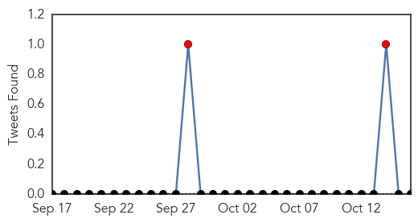

Meningitis
30-Day Web Trend
0 alerts, 0 warnings
30-Day Twitter Trend
2 alerts, 0 warnings

Article Locations
Article Confidences

Top Articles:
Top Tweets:
-
No tweets found for Oct 16, 2015
Yellow Fever
30-Day Web Trend
1 alerts, 0 warnings
30-Day Twitter Trend
0 alerts, 0 warnings

Article Locations
Article Confidences

Top Articles:
Top Tweets:
-
No tweets found for Oct 16, 2015